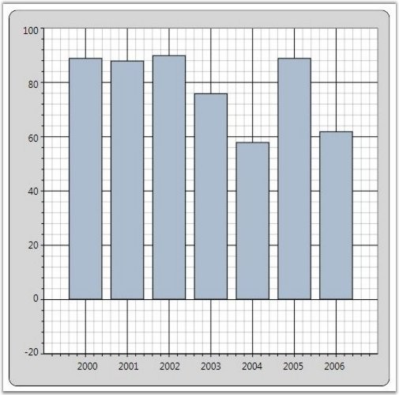
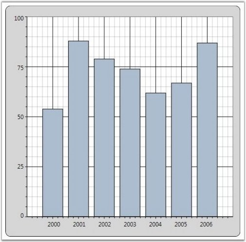
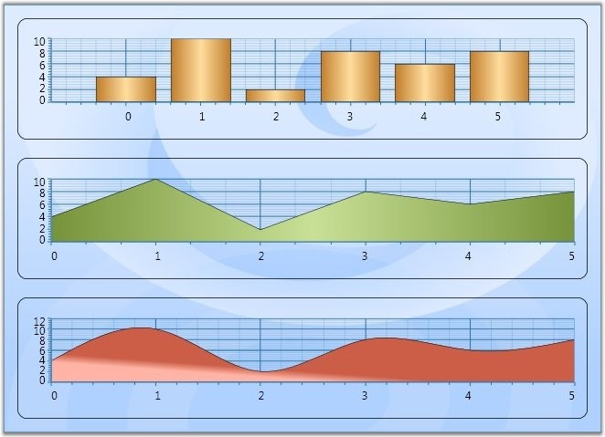
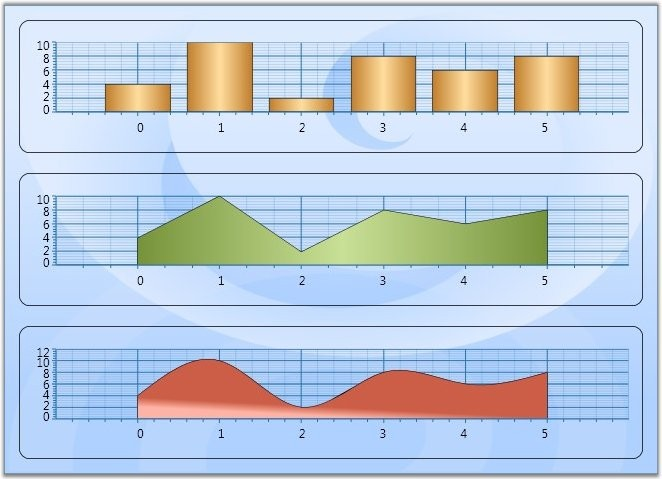
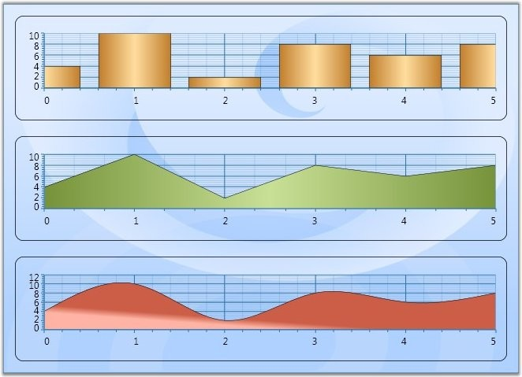
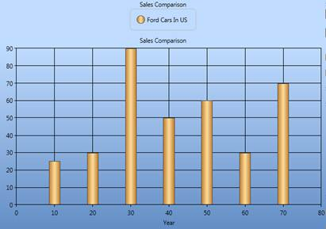
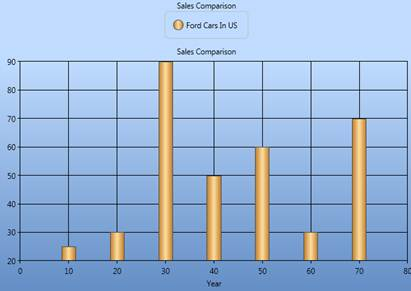

Essential Chart for WPF lets you customize the range and intervals that are displayed in the axes. This section discusses the below topics.
· Axis Range Customization
· AutoRange Customization
· Custom Range Support
· RangeCalculationMode
· VisibleRange
Axis Range Customization
You can customize the range and intervals that are displayed in the axes by using the following ChartAxis properties.
Table 124: ChartAxis Properties
|
ChartAxis Properties |
Description |
|
IsAutoSetRange |
A bool property specifies whether the range of the axis should be set automatically or a custom specified range will be used. Default is true (auto range). |
Auto Range Customization
With the default "auto range calculation" setting (IsAutoSetRange=true) the following properties let you customize the automatic range calculation a bit.
Table 125: ChartAxis Properties
|
ChartAxis Properties |
Description |
|
DesiredIntervalCount |
A integer property used to indicate the preferred total number of intervals to be displayed for auto range calculation.
|
|
RangePadding |
An enum property, used to specify the spacing of the chart axis for auto range calculation. This property can take three values: None – Range of the axis will be calculated from minimum value in the data source to the maximum value in the data source. Normal – Range of the axis will be calculated from the nearest multiples of interval from minimum and maximum values in the data source. Additional – Range of the axis will be calculated one interval lower from the minimum value to one interval higher than the maximum value in the datasource in terms of multiples of interval. |
|
IsSetDataValueRange |
A bool property used to calculate the axis range based on the modified data value range. |
|
[XAML]
<sfchart:Chart> <sfchart:ChartArea Background="LightGray" GridBackground="White"> <sfchart:ChartArea.SecondaryAxis> <sfchart:ChartAxis IsAutoSetRange="True" DesiredIntervalsCount="5" RangePadding="Additional"/> </sfchart:ChartArea.SecondaryAxis> <sfchart:ChartSeries Type="Column" DataSource="{StaticResource SeriesData1}" BindingPathX="Year" BindingPathsY="Sales"/> </sfchart:ChartArea> </sfchart:Chart> |
|
[C#]
Chart1.Areas[0].SecondaryAxis.IsAutoSetRange = true; Chart1.Areas[0].SecondaryAxis.RangePadding = ChartRangePaddingType.Additional; Chart1.Areas[0].SecondaryAxis.DesiredIntervalsCount = 5; |

Figure 172: YAxis: IsAutoSetRange = "True"; ChartRangePaddingType = "Additional"; DesiredIntervalsCount = "5";
Custom Range Support
With the "auto range calculation" turned off (IsAutoSetRange=false), you will have to use the following properties to instruct the chart on the custom range and interval length to use.
Table 126: ChartAxis Properties
|
ChartAxis Properties |
Description |
|
ValueType |
Specifies the metrics for the axis range. Can be Double, DateTime or String. |
|
Range |
This DoubleRange type property specifies the custom range to use when ValueType=Double. |
|
Interval |
An integer property indicates the length of the intervals in the custom range specified above, when ValueType=Double. |
|
DateTimeRange |
A DateTimeRange type property that lets you specify the start and end of the axis range in DateTime, when ValueType=DateTime. |
|
DateTimeInterval |
The frequency at which intervals should be rendered. Specified in TimeSpan, when ValueType=DateTime. |
|
MinimumInterval |
An integer property indicates the length of the MinimumInterval in the custom range specified above, when ValueType=Double. The interval will not fall below this value. |
|
MinimumDateTimeInterval |
The frequency at which MinimumDateTimeInterval should be rendered. Specified in TimeSpan, when ValueType=DateTime. The DateTime Interval will not fall below this value. |
|
[XAML]
<sfchart:Chart> <sfchart:ChartArea Background="LightGray" GridBackground="White"> <sfchart:ChartArea.SecondaryAxis> <sfchart:ChartAxis IsAutoSetRange="False" Range="0,100" Interval="25" MinimumInterval="25"/> </sfchart:ChartArea.SecondaryAxis> <sfchart:ChartSeries Type="Column" DataSource="{StaticResource SeriesData1}" BindingPathX="Year" BindingPathsY="Sales"/> </sfchart:ChartArea> </sfchart:Chart> |
|
[C#]
Chart1.Areas[0].SecondaryAxis.IsAutoSetRange = false; Chart1.Areas[0].SecondaryAxis.Range = new DoubleRange(0, 100); Chart1.Areas[0].SecondaryAxis.Interval = 25; Chart1.Areas[0].SecondaryAxis.MinimumInterval = 25; |

Figure 173: YAxis: IsAutoSetRange = "False"; Range = "Double Range(0,100)"; DesiredIntervalsCount = "25"
 Note:
Note:
· The Range set for axis with Double ValueType and DateTimeRange set for axis with DateTime ValueType will be taken into account only when the IsAutoSetRange property is set as false.
· The Interval, DateTimeInterval properties could be used to set intervals when the range calculation is done automatically or even when custom range is set.
· While using custom ranges, make sure that the series.IsIndexed property is set as false. So, that the actual X axis values and the range will be taken into account.
RangeCalculationMode
Some of the charts such as Column and Bar, have segments drawn on the data points. Hence these types require an additional point added to the range, so that the segments will not be hidden. However, charts such as line chart will have the range calculated exactly from the start point. This is the default behavior.
Below screen shot shows this behavior. Column chart drawn with one plus point in the start and end of the axis. Whereas area charts drawn with points starting from the axis.

Figure 174: RangeCalculationMode = "Default"
However, in some cases we require either of the types to be consistent. For this we could use the RangeCalculationMode property.
Table 127: ChartAxis Property
|
ChartAxis Property |
Description |
|
RangeCalculationMode |
Default: The default behavior. AdjustAcrossChartTypes: All charts will have one plus interval added to the start and end of the axis to be consistent with the column chart. ConsistentAcrossChartTypes: All chart will be drawn from the axis start point. In this case column charts will also be drawn with same range as other charts, making the first and last segments hidden partially. |
|
[XAML]
<syncfusion:ChartArea.PrimaryAxis> <syncfusion:ChartAxis Header="Date" RangeCalculationMode="AdjustAcrossChartTypes" /> </syncfusion:ChartArea.PrimaryAxis> |
|
[C#]
Chart1.Areas[0].PrimaryAxis.RangeCalculationMode = RangeCalculationMode.AdjustAcrossChartTypes |
Below given screen shot shows chart with RangeCalculationMode as AdjustAcrossChartTypes.

Figure 175: RangeCalculationMode = "AdjustAcrossChartTypes"
Below given screenshot shows chart with RangeCalculationMode as ConsistentAcrossChartTypes.

Figure 176: RangeCalculationMode = "ConsistentAcrossChartTypes"
Visible Range
It is possible to get the Range that is visible in the ChartAxis by using the ChartAxis.VisibleRange property.
|
[C#]
DoubleRange range = this.Chart1.Areas[0].PrimaryAxis.VisibleRange; MessageBox.Show("Start " + range.Start.ToString() +", "+ "End " + range.End.ToString()); |
Note: Visible Range can also be calculated for the
changed value of the range by using the Axis.RangeChanged event.
For details, see Chart Axis Events.
See Also
Support to Set Axis Range Based on the Data Value
This feature implements support for sharing a data range between axes, and concurrently both axes will have appropriate visible labels rendered on them based on the modified data range at run time.
Use Case Scenarios
In a real-time data charting scenario such as a stock analysis, if the number of years to be visible in the range has been modified at run time, then the alternative y-axis range will also get modified based on the modified data range value in the x-axis.
Properties
|
Property |
Description |
Type |
Data Type |
|
IsSetDataValueRange |
This property enables when the user wants to calculate the range based on the data point value range |
Dependency Property |
Binary, true/false |
Sample Link
Open the Sample Browser and select the following,
1. Click User Interface > WPF and select Run Samples
2. Select the Chart product
3. Select the Chart Axis > Chart Axis Configuration demo
Adding IsSetDataValueRange to an Application
|
[XAML] <syncfusion:ChartAxis x:Name="YAxis" IsAutoSetRange="True" RangeCalculationMode="Default" RangePadding="Normal" IsSetDataValueRange="True"/>
|
|
[C#] this.YAxis.IsAutoSetRange = true; this.YAxis.IsSetDataValueRange = true;
|

Figure 177: Before Basing Axis Range on Data Values

Figure 178: After Basing Axis Range on Data Values